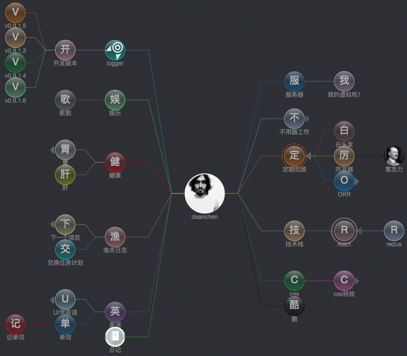

close the tag's info tip
show the tag's info tip
close add tag dialog
show add tag dialog
close add tag menu
show add tag menu
copy button is valid
copy button is invalid
E=MC
2
#
olivepop
#
creative
#
hard work

DEANCHEN
Created at 15/12/2017.
this hashtag is root of others, it means the user.
385 relevant logs.
#logger
Created at 15/12/2017.
this hashtag is root of others, it means the user.
385 relevant logs.
E=MC
2
ADD A HASHTAG
relevated to #技术线
#
ADD A HASHTAG
relevated to #技术线
#logger
Setting
is a tool, with it noting people’s everything.
ADD A HASHTAG
relevated to #技术线
#logger
is a tool, with it noting people’s everything.